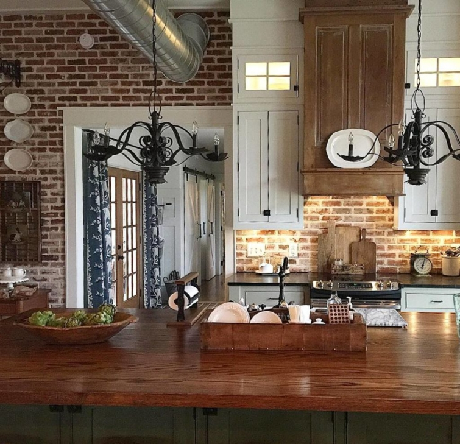
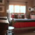
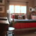
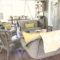
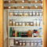
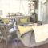
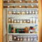

.png)
.PNG)
.PNG)
.PNG)
.PNG)
.PNG)
.JPG)
.JPG)
.PNG)
.PNG)


Six years ago, I began this blog by opening the front door here
and inviting you in for my very first post.
Over those six years we have talked about many pretty houses.

We have shared trips to Maine…
to Washington state…

to Florida…

to Vermont…

and to countless places in between.

We’ve met designers.
Who would have ever dreamed that Holly Mathis would have stopped by for a visit here??!

And I about had a heart attack when Stephen Saint Onge left a comment and agreed to an interview!!

We’ve met authors…
(and been in their homes!)


We’ve celebrated countless Christmases…

Valentine’s Days…

Independence Days…

Halloweens…

and every other holiday on the calendar. 🙂

We’ve hosted graduation parties….

and every kind of birthday party I could dream up. 🙂

We’ve talked about all sorts of delicious foods,
from desserts…

to drinks…

and from side dishes…

to salads.

And most often we have talked about this house…about all the many many times I have redecorated it for holidays or parties or simply when we have changed from one season to the next over the past 6 years.

Through the sharing of all of this, you have become friends…dear friends. 🙂 And for that I am so very thankful. You have read my ramblings and left thousands of uplifting comments and sent thousands of enthusiastic emails. In short, you have opened your hearts to me, and I could have never dreamed that a little space on the internet would bring about such human connection. Thank you is soooooo inadequate. But, as you can tell from the title, this is sadly my last post here at Talk of the House, and I want to explain why I have reached this decision.

First, my hosting service (the place where my blog is “stored” for the internet) is up for renewal at the end of this month. Because I have been sporadic (at best) in writing posts for the last year and a half, it just doesn’t make financial sense to spend several hundred dollars on something I will not be able to give my best to. But this is not the main reason for closing the door on it.
My husband and I have wanted a lake house for many many years. Our previous home (for 10 years) was over in a neighborhood near a local lake, and we would walk up and down the lake road dreaming of owning a home there in the future. Since owning this house, we have driven up and down that same lake road many times over the 21 years we have lived here hoping to find a home that we could purchase there.

And of course I have checked out realty sites on a daily basis for years. Three weeks ago, one of those homes on the lake (one of only 3 we had our heart set on 🙂 ) popped up on Zillow. To say I was excited would be a major understatement! We looked at it for the first time the next day and several times the next week. By the end of the week we made an offer, and now we have a contract on it. But let me say, it is quite a contrast to our current home. It is almost 70 years old, smaller than this one, and is going to require a tremendous amount of work to get it to the point that I want it (and it doesn’t have a porch. 🙁 ) But it is on the water, and that is what counts. 🙂

So what about this house…this house that has been the setting for our lives for the past 21 years. We have not listed it with a realtor, but we think we have a buyer – a young couple who will be raising their children in this home, making their own memories here, and are going to make this house their home – and we should have a contract signed by early next week. We close on both homes in about 5 weeks…5 short weeks! But we are still not finished with all the work here!! This has all happened soooo fast, and there have so many crazy coincidences that I can’t help but think this is all a God thing. 🙂
The last 3 weeks have been a whirlwind of looking at the lakehouse, meeting with a realtor to sign different documents, meeting with loan officers at banks, shopping at Lowes and Home Depot, showing this house to several couples, and trying to get the house ready to be turned over to another homeowner. With all the finishing of painting and other jobs here, along with cleaning out, packing, moving, and then all the work required over at the lake house, there will just not be time for blogging. But I am going to take photographs as we do the work over there, and perhaps I will come back to a new blog with that house when things are less hectic, and we can talk of the lakehouse instead of this house. 🙂 And there is always Instagram!

The blog will disappear around Feb. 27 when my hosting contract expires. If there are photos of anything you want to save, you can pin them to your Pinterest boards before that date. Obviously they won’t link to anything on the blog, but at least you will have the image. I did renew the rights to the name so that I can use it in the future if I would like to. And there will be a holiday magazine out next fall with photos from the Christmas photoshoot we did here in January. I don’t know the exact title of the publication, but I do know that Country Sampler will be the company publishing it.

And now it is finally time to bring all of this to an end (and get back to painting!) I cannot thank you enough for your time and support the last six years. Thank you for sharing in my joy as the house was featured in Better Homes and Gardens, Cottages and Bungalows, and Southern Cottage. Who would have ever dreamed an ordinary house in the middle of Georgia would have gotten all that attention?! It has been such a pleasure and a true privilege to share things with you here at Talk of the House. From the bottom of my heart I thank all of you for your friendship.
With much love,
Until next time.


 
 



.PNG)
I have loved reading your blog over the years. Thank you so much for sharing. Whenever I see buffalo checks, I think of your red and white curtains and smile. Take care and enjoy your new home.
I may not have regularly commented but have followed your blog for the past few years. Your simplicity of style have always inspired me. I will miss your blog but wish you all the best. I can’t wait to see pictures of the lake house in some format or another. <3
I have bookmarked so many of your ideas, and use them. Please, please keep this site open. I think your friends would even chip in to keep it open. I teach all day and don’t have time to pin all my bookmarks. You are so creative and different than other bloggers. Is there just no way for you to save all your work. Any way for you to have an account on Pinterest and save your entertaining and holiday pics?
Kelly! Congratulations to you and your husband on purchasing your lake home and how blessed are the new owners of your home!
I have been following you for a few years and will say that your blog is my favorite. You have graciously shared your home, your family, your travels, and I have appreciated it all.
I wish you all the best with your new home.
“One door closes…” will miss you but of course wish you all the best in the lake house!!! Think of all the new decorating to come!! Now off to add “pinning” and “Instagramming” to my to do list this week!!
Best always!!
Colleen
“The ornaments of a home are the friends that frequent it.”
What a loss. I’m grateful for all you’ve shared, and I will miss it.
Oh Kelly, I am so sad my favorite blogger is closing up shop, but completely understand. I’m sure it was a very hard decision. I imagine you probably felt a huge amount of relief after making it. I am thrilled for your new adventure though and so very excited to follow along on Instagram. Whew, thank goodness you’re on Instagram!! 😀 And I am hopeful since you left the door open to possibly blogging again. Now, I’m going to spend some time “pinning” the next week. Ha, I’ve already “pinned” a few images this morning. 😉 Thank you for all the inspiration through the years!! Oh, how I am going to miss all your beautiful home posts, table settings and party ideas!!
Kelly, Thank you for your years of including us in your life. I just found your blog in Dec and have totally enjoyed your messages. Wishing you and your family luck and much joy as you head into a new house to redo and a family wedding to help plan. Maybe, when your lives slow a bit, you will let us know how the new house is coming along! Thank you for your inspiration!
Oh…. happy for you, sad for me! I just recently stumbled on your blog and i was really having fun reading your new posts and browsing the old… Much luck on your new adventure and I hope to see your new edition as you are ready to share! Congratulations from a NC neighbor!
I feel like I am losing a mentor! Can we contribute to keep the site active even if there are no posts for a long time?! I will miss your creative inspiration. Best wishes!
Kelly, Just want to you know how much I have loved your blog. From your wonderful holiday ideas, home decor, recipes , to travel (we leave on March 1st for Asheville thanks to you), you have been such an inspiration.
I will be a “MESS” with out you! Picture myself wandering aimlessly around Target, without a “Kelly List”! Wishing you much happiness and Gods Blessings in your new home. You will be missed but thank you so much!❤️
I am so sad to read you are closing down your blog. I am with Terry and Connie. Can I mail you a check, like they suggested? Let’s keep this blog alive….please? What will I do when it vanishes and I am sipping on my coffee and wanting to stroll through your blog for inspiration, recipes, travel, or just plain ol’ “check curtain” eye candy! If your blog was a book l’d buy it! You know like those Pottery Barn or William Sonoma ones. You put yourself out there along with your family. You are truly blessed and I can see how hard you are committed to “family”. I know there are more wonderful things ahead for you all as you venture into new beginnings at the lake house. I will miss your darling porch. Your blog was like that neighbor I could borrow a cup of sugar from ☹️ We talk of retirement, lake house life too, but aren’t quite there yet. Still dreaming…. I wish you and your family the best. Signing off… heartbroken.
Kelly
I am so excited for you and hope that you come back and share your new home with us. Thank you for all the inspiration. I will miss your posts and your lovely home.
Andrea in Illinois
Oh my gosh, Kelly, I am really going to miss you! Your blog has been one of my top few favorites. And, I’m very happy for you and your family. The lake house sounds like a dream come true – you can make it your own, it will be exciting and rewarding and fabulous. I am so glad we can follow you on Instagram. All my best and many thanks for your wonderful blog.
Kelly, thank you for sharing your home, and all the beautiful other homes over these last 6 years. Blessings to you and your husband in your new adventures on the lake!
Kelly,
When you have a minute, can you email me about how you secured your lodging at the “beachy” WDW resort? Did you go through a travel agent or just call WDW every month for months prior to booking? In the blog post, it sounds like you got a really good deal but didn’t mention if that was just lodging or if it included one of your meals in the park. I loved all your birthday posts & Disney travels, including Hilton Head. Congratulations on the new chapter of your life in the lakehouse & your daugher’s upcoming wedding!!
Oh, Kelly! You have brought such joy, energy and sunshine to my days with every post. Being a single caregiver to my now 90 year old mom who is traveling down her final road with dementia, I’ve had to exchange fine linens for plastic tablecloths, all holiday decorations for super simple non-distractions, and leaving the joy of friends, travel and church to provide care for the mom I love.
I discovered Talk with your Martha’s Vineyard and Susan Branch posts and never missed one after that. You are the only one who could get me to sign up for Instagram! lol My good friend, her daughter and I still plan our trip to Biltmore after enjoying your posts.
Bless you and your family…keep making your dreams come true, always look up! and never lose your joyful spirit! Thank you for all the hard work and time you put into Talk. We loved it all, and you will be very much missed. Thank you for it all….mari
Gosh! You will be missed! I follow you on Instagram as well, so I hope you will be able to post progress there on a regular basis! I understand the call of the water. My husband and I purchased land facing a lake and placed a home there for weekends and getaways, but I’d move in full time in a heartbeat. It is a different kind of HARD work, as simple facets like keeping up with algae growth on the sides of the home is a yearly project, but the peace and respite is like no other. Blessings to you and your husband as you start this new chapter in life.
Hi Kelly! I feel so very happy for you and your husband and I can sense your excitement! Having looked at those Lakeside houses for years and to now know that one is going to be yours, is wonderful! I found myself wondering if maybe your daughter and husband may be moving into your house … or whether you’re making a clean break! and saying goodbye to it 😊
From my perspective I feel sad, like moving away from a friend, that I won’t be hearing from you anymore … no matter how sporadic! I know it’ll have been a tough decision to make! The saddest thing I think is that all your posts won’t remain online for us to re read and use for reference. Thanks to you I’ve visted many places in the US that I wouldn’t have known about … the fact you had a search option was so useful too … all your party ideas could form a book!!
Take care Kelly! Enjoy this exciting year in your new home and preparing for Hayley’s wedding. Hoping you still continue on Instagram.
Rosemary xxx
Your site is one of the first I followed, and one of the very few I still do. All the best with the new place. Well done for having the courage to follow your dreams. You have always been an inspiration. I now have an empty nest and my husband and I face a transitional phase of life. Hope we can be as brave and make these years count.
Dear Kelly, It’s not easy to type through my tears. I’m going to miss you and your house so much!! I just don’t know how you can leave it. Thank you for sharing it with us for so long. Your husband is wonderful to do all he’s done! You are blessed. Thank you from the bottom of my heart.
Your friend,
Julia in Cincy(from Va.)
Oh, Kelly, I feel like crying! You were one of the first bloggers I “met” and I so enjoyed coming home after a day of teaching and reading your latest post. You inspired me to start my own blog and I appreciate so much your responding to me when I emailed you with questions! I’m happy that you and your husband have gotten your lakehouse! How exciting for you! Blessings to you in this new adventure and I hope that if you do blog in the future, I will find your blog! Thanks for all of the inspiration!
Dear Kelly
Farewell my internet friend. I will definately miss your emails informing me of new blog content. You have a gift for decorating and I know the lakehouse will look just as good as your current home… in good time. Enjoy the process of making it yours. I hope you post photos so we can tag along.
You taught me not to be frightened of colour – especially red. xx
all the very best from down under.
Celina
Dear Kelly-I am so sad to hear this news. I will miss you and your blog so much. I do hope you will return with another blog some day soon. I’m very excited about your lake house. What a wonderful next chapter in your life. Best of luck. Know that you have many fans and friends out here in blog land. XOXO, Anne
Kelly,
Thank you for all the time and creative energy you have given to this blog. I was wondering if we could create a kick starter campaign to host your blog (without you having to write a word unless you wanted to) for the next two years. The photos are wonderful (I know you will continue on Instagram with photos, but the writing content of your blog is so special. I started pinning like crazy but then realized I will miss your wonderful words and info you include in each amazing post.
I am happy to contribute $25.00 x 2 so just let us know if this is a possibility?
At first I was heartbroken to read that in the same month when I found your site, it was set to close. And then I reminded myself to “snap out of it” and be thankful I DID find it AND that you gave us that head’s up so we could “pin images”. I’ve even created a special board. So..THANK you for sharing. Your sensibilities are those I recognize…celebrating everything, gingham and color blocking, great “rambles” and family first. I wish you EVERY happiness in this new chapter but when things settle I think you might want to think about creating a book or two or six…I know I would line up to buy them. My ninety year mother lives with me now in my small cottage and I had originally planned to build a lake house with great outdoor entertaining spaces. But for now, this is my chapter and finding your blog gave me a bit of direction. Although I do always decorate for each holiday and occasion I think I will be more intentional about specific areas and curating and rotating my favorite things instead of keeping them stored for the “lake house”. Thanks again for sharing but I’ve got to go…I’ve GOT lots of favorites to pin before the 27th!
Oh my gosh! It was fun while it lasted! Thanks for all your posts thru the years. So much fun to see! I seriously wish you would have at least doodled us your floor plan. I know it was based on a plan that you modified and I have always wished we could have seen how all of the rooms flowed. I follow you on instagram so hopefully you will keep sharing there. Wish you the best with your new lake house! Again, thanks. It was a lot of fun.
Very sorry to hear this because I just recently discovered your blog and had really enjoyed it and going back and reading some of the older posts. But I completely understand as I am going through a similar situation of selling my condo and moving into my parents’ old home and dealing with all their stuff (and mine). It’s incredibly time-consuming. I hope you’ll be able to return to blogging at some point. I’d love to see the new (old) lake house and what you’ll do with it. Best of luck with everything!
Kelly – I don’t think I’ve ever left a comment on your blog before but I have enjoyed it so much! You have inspired me during a time in my life when my sails needed a fresh wind. One of your posts I carry in my mind is about those red totes in your attic and how pristine they looked and how simple and organized it all seemed. And all that cheery buffalo check!
You must be dealing with so many mixed emotions! God bless you and your family as you make these changes. How exciting!
I will miss your blog, Kelly. I have so enjoyed your holiday home decorating, your themed parties, and your travels. I hope happiness and good luck move with you into your new Lake home.
I will miss your blog, Kelly. I have so enjoyed your travels, your theme parties, and your holiday home decorating. I hope happiness and good luck move with you into your new home.
So sorry to see you go, Kelly! I have thoroughly enjoyed your blog and have used it so very many times for ideas and inspiration. And SOMEDAY I hope that my attic will look like yours with all of those beautifully lettered red bins!!
Best of luck to you in your new home.
Thank you!!
so soad to see you go…but WISH YOU ALL THE BEST! Thank You cannot begin to express the admiration for your uplifting posts on celebrating life and each moment of life thru simple holidays, birthdays and just-because-days…thank you for sharing your talents of making others feel special thru simple celebrations that we can copy or “borrow” ideas from…so long from NC 🙂
Thrilled for you but sad for us. You and Rhonda at Southern Hospitality are my two favorite blogs. Your talent is amazing and I have enjoyed this journey with you. Take lots of pictures to share when and if you decide to return. May God bless your new lake home and allow you and your family to keep making more precious memories together. Kindest regards.
Thank you for sharing your home and your life. I have enjoyed reading your blog. You are so creative and talented. May God bless you and your family as you begin a new chapter in your life.
Thrilled to hear of your new chapter! I will miss you and your blog and will be watching for the new one.
Good luck in all of your future endeavors!
Congratulations!!!! I’m sure going to miss your blog. It was a bright spot in the internet world, you know what I mean? When I saw your blog pop up in my email, I knew I was going to get to take a break and see beautiful things, your house, your travels, the food, the decorations. You take amazing photos! With all the chaos going on in the world, it was nice to see some beauty. You gave me so many terrific ideas, so now it’s time for me to go make some beauty in my world. Much happiness in putting together your lake house!!
First off, congratulations on you “next step in your life.” I am already wanting to see your Lakehouse!!! BUT, in the same instant, I feel sad to see you go. I loved checking in with you and have stolen some of your design ideas for my own house. You have such a gift. Please know that I consider you a friend even though we haven’t met. I won a Valentines gift from you several years ago and still cherish it. May GOD bless you and keep you!! May HIS face shine upon you! Please come back and show us your Lakehouse soon.
Oh Kelly, how exciting! Congratulations on the new lake house. Whilst it may take a lot of work, I am sure that it will be a beauty in the end and a wonderful adventure in the meantime.
I’m sorry to see this blog close – it is one of my favourites – but I do follow you on Instagram so I hope to keep in touch. You have built a truly lovely space here, but I understand and respect your reasons for moving on. Thank you so much for all of your hard work and sharing so much. I’m sure your daughter’s wedding will be one to remember, and I send you all the best wishes for a smooth and happy occasion.
I think I found you relatively near to your blog’s start, although it took me a very long time to post a comment. I just had a baby boy in December, and aim to make our family’s home as warm and welcoming as yours – with the occasional fabulous party thrown in for good measure!
Kelly, what a true joy your blog has been! You were the first of what I call the “home blogs” that I found – having hust moved to Texas from Georgia (22 years in the same lovely home), you really helped me adjust to a new home and state. I am so excited for you and your husband as you embark on a new adventure. I know you will make this lake house your home and I hope you will share some photos (through instagram) along the way! Again, thank you for sharing your life and home through this beautiful site and may God richly bless you as a new adventure begins 🏠💕
Kelly, Congratulations on finding your lake house! So exciting for you and your family and a whole new house to decorate and make your own.
I am sad you are leaving blog land, as I recently found your “Talk of the House”. I adore reading your blog and all the great ideas you have shared!
Best of luck in your new adventure!
I have read your blog for years. Your style and joy for life have have been an inspiration to me. You have made blackboards into works of art. I love how to take the simples things, toys, candy, etc and then make them into decorative displays. You show love to family and friends by decorating and cooking. I try to do that too. I will miss seeing your beautiful home and reading about your adventures. I wish you all the best in your new endavors. You will be missed. Thank you for years of inspiration and entertainment.
Kelly I am very happy for you. Last August my husband and I moved from Florida to Georgia (near Augusta). We had lived in our Florida home for 17 years! The house was my “dream” house. But, we always wanted to live somewhere that would have 4 seasons – other than Florida’s hot or hotter seasons! We bought 10 acres and the house on the property is much smaller and needed a lot of love. We have seen God work in making this happen and at times it has been scary!
I’m so happy for you and your husband as you live your dream! You have become a virtual friend and I will be praying for you. Thank you for sharing your home and family with us. And for all the inspiration your blog/decorating has given!
Kelly, though I have not commented regularly on your blog posts, I have never missed one. I have received so much inspiration from your table settings, to seasonal decorating, to road trips and fabulous vacation destinations, to a glimpse into your dear families’ life. Thank you, thank you for sharing your creativity and family love with us, your readers.
Wishing you well as you build a new life and home on the lake, and prepare for your daughter’s wedding. I’ll look forward to Instagram posts, and think of you and the hard work and fun that lies ahead as you and your husband pursue your dream on the lake. God bless you, and ongoing gratitude for ALL you’ve shared with your blogland family!!
I just found you recently and now I am so sad to be losing you but I do understand. I just celebrated my 8th year in blogging and have often wrestled with the idea of whether or not to continue. For now, I will but who knows what the future holds. I will be going through your blog pinning everything that I can. I wish you good luck and good health…
Hugs,
Deb
So much happiness for you, Kelly, as you turn the chapter and begin another. We’re gonna miss you, though, and wish all your dreams come true. I’ll be a pinning madwoman for the next few days.
Since I’ve already commented, I’ll keep this short… I was telling my husband about your wonderful blog, and he wondered if you could move your archived posts to something like WordPress. He seemed to think it was free, or that there might be free blogging platforms out there. I thought I’d pass that along, in case it’s an option. Thanks again for everything!!
Kelly, I’m so happy for you and your husband. You have to live the dream!!
I’ll miss Talk of the House so much. There have been so many times I’ve poured over your photos studying the details. Maybe one of these days you’ll want to share your lakehouse.
I wish you all the very best! ♥
Dear Kelly, how exciting for you and your husband to have a wish coming true with a new lake house. I’m so happy and excited for you. You blog was the very first one I subscribed to, and I’ve enjoyed all of you posts, thank you so much. Hope you have a wonderful time working on your new home and also hoping that you’ll find time to blog again in the future
Best wishes with your new endeavors! You’d better be back, though. I have enjoyed your blog tremendously over the years, and feel sad that you are closing this door. But hopefully, another one will open soon.
Regards,
Ann
So thrilled for you and your family. A new adventure. So devastated to think that this blog will be no more. This the first blog that I ever signed up for and have loved it. Wishing you all the very best in your new home.
OK KELLY ! NOW LISTEN !! I just read ALL those comments and YOU cannot leave us HIGH and DRY !!! We LOVE!LOVE!LOVE!LOVE ! Your DECOR ideas!! They are THE BEST !!!! Many BLESSINGS to you and family on your LAKE HOME ! But you HAVE to COME BACK to us after things settle down!!WE NEED YOU !!! HAVE I CONVINCED YOU YET ! PLEASE RECONSIDER ! You are a VERY talented decorater !! WE LOVE YOU ! Ha ! I’m sounding desperate ! Ha ! Seriously ,get settled and hopefully you will come BACK to your followers !!!! POST at YOUR CONVIENCE ! You will be missed !!!
Wow— so happy for you, but so sad for all of us! What a great adventure! You will be soooooo missed- but we all have to pursue our dreams! You have been such an inspiration with all that you do! Good Luck and hope to hear from you soon!
Kelly, I have followed your blog since day one. Thank you for inviting us into your home, meeting your family, visiting beautiful places, celebrating many birthdays and holidays. I am so happy for you and your husband having this dream come true, your lake house. I will sign up for Instagram so I can view you sharing the lake house and your daughter’s upcoming wedding. May God always bless you and your family. Much love from this retired teacher in Ohio.
My first thought is so selfish – I will miss your beautiful red blog and all your beautiful posts. I’ve enjoyed reading about your recipes, trips and family. Maybe some day we’ll meet. I owe my cousin in Atlanta a visit… Best of luck to you and your husband on your new adventure. The best is yet to be!
I’ll miss you. Wishing you the best in your next chapter of life. Blessings.
Kelly thank you so much for all your wonderful posts. You say who would have thought a house in Georgia would get so much attention…. Kelly it wasnt the house , it was you Kelly. You created a wonderful home and were so gracious to share it with all of us. You will be very missed. Take care of that adorable pooch, give him a hug from me.
So happy for you and this exciting new chapter. Your blog was so fun to read I especially loved all of your party decor…if you ever get bored you would be a great event planner😊Best wishes!
Kelly,
I have thoroughly enjoyed your posts and inspiration. I quit my blogging about 2 years ago and I still sometimes think about going back to it. No time and so I entertain myself reading others wonderful posts. Best to you and I hope you’ll revisit blogging at some point with progress of your lake house.
xo,
Karen
Will miss your blog and all the wonderful inspiration. Yeah for you on the lake House! Best of luck and above all—- happiness😊
Wow Kelly, I am so happy for you and your new adventure but at the same time I am so sad about your blog ending. I feel like we just reconnected after all these years and I so enjoyed reading about your travels and your sharing your decorating and party ideas! I was also looking forward to future posts about your daughter’s wedding. But I do completely understand and hope that once you get moved and settled a little bit you will find time to blog again. Best wishes with your next chapter and I hope you enjoy every minute! I will be looking for you on Instagram!
You will be sooooooooooo missed! I loved your blog and looked forward to every posting. Thank you for the time and work you gave to this blog. Best wishes in your new journey.
Kelly, I have enjoyed your blog for several years- I will miss it for sure. Thank you for sharing your beautiful house and great stories of your family. I wish you much joy in your new lakehouse and I hope to see pictures of it one day. Best to you! Debbie
Bless you and your new venture! This all sounds so exciting, and that is life: change is inevitable.
NNNNNOOOOOOOOOOOOOO!!!!!!!! I’m so sad to say goodbye to your wonderful blog!!! I hope you keep all our email addresses so that if you start a new blog, a lakehouse blog, you will be able to let us know. :'( I hope everything over the next 5 weeks goes well for you. Thank you for all the great tips, tricks and TRAVEL ADVICE! You are the best!
I am heartbroken too! I will miss you so much. You blog is the best and I have always enjoyed your posts. This is so sad but I understand things change and life moves on. Best of everything to you and your family. I hope to see you on Instagram! And if you do come back be sure to let us know! Bye Kelly and may God bless you. Thank you for everything.
Too sad for words..but, thank you, best wishes, and God bless you and your family. I am stunned. Tell me this is a bad dream.
I am sad you are going away but happy you are following your dream. Thank you for sharing your life and family with us. I will follow you on IG and hope for your return here.
Goodbye for now friend!
Kelly, I am so happy for you but sad for the rest of us. I have so enjoyed your blog. You have given us so much inspiration and I always loved seeing talkof the house.com in my mail. Thank you…
I understand, I have a blog I’ve ignored for quite a while – it takes a lot of time to keep up with posts! I enjoyed our discussions when your son moved to WA – hope he is still enjoying the PNW. Best of luck in your new adventure – a lake house is a retirement dream for us…just 3 more years in the classroom for this old teacher to go. Maybe when I’m ready to retire, you’ll be ready to start up again! (And I’ll see you on IG)
I commented earlier today and following your advice I have begun saving pics from your wonderful blog. I am realizing very quickly what a wealth of information this is and I am so sad it will just disappear! I can save pics but not your wise advice,stories, how to…I just read about Earl…the spray paint machine for the first time ever! I can’t believe this is going to be lost! 😞
Thank you for all your wonderful posts over the years. Best of luck to you and your family!
I totally understand the time issue. My life has been in such a turmoil the past year. I have been dealing with health problems of my parents and didn’t even realize that you were posting Les. I just enjoyed each post and read the more than once. I wish you well on your new endeavor. May God bless you.
Kelly, Thank you so much for all of the blog posts over these years . I have so enjoyed all of your beautiful home decor , theme birthdays , holidays , graduations, visits to restaurants, inns and cute stores ! Your blogs were always
A bright spot in my day .
I am so excited for you and your husband finding your perfect lakeside home !
I know you will have so much fun decorating your new home . Best wishes on your next big adventure !
I read one comment that she said it made her want to cry…I feel exactly the same way. I have been following you for a couple of years and always looked forward to your posts. I certainly understand the time factor…you are going to be so busy and have so much fun with the new house. Please post your progress on Instagram! I know that we all wish you well but want to share in some way your journey and what you do with the new house…before and after.
I am absolutely heartbroken to hear this news. Yours was the first blog I started following several years ago. I have been inspired, entertained and instructed by your many talents. I wish we could join your new adventure as I am certain it will be wonderful. I wish you and your family all the best!!
I fully understand why you must walk away from writing your blog but I will definitely miss your postings. You are an extremely talented hostess and I thoroughly enjoyed the many themes you developed for holidays and special days. Your creativity was outstanding and so classy! I know you will be working hard on your new home but I hope you have a lot of fun along the way. And, I know, without a doubt, that your new home will be beautiful. Hoping to hear from you again in the future. Don’t hesitate to share your new home, your projects, and your beautiful decor and table settings!!!
Thank you for sharing your home and travels. I know you will make the new home a special place. Will miss my favorite blogger.
Kelly, Thank you for all of the enjoyment,ideas,and inspiration that you provided me over the past 6 years. I always looked forward to reading your blog and want you to know that I will truly miss Talk of the House. I wish you well and much happiness!
Tears were rolling…….. I’m going to miss you so and all the wonderful trips and inspirational decorating ideas. I have become pretty much a homebody since my husband and son passed in the last five years. And every night after a long day teaching I looked forward to your blog because you were doing things I wish I could have done. Thank you for giving me those trips. All the best to you as you start a new chapter in your life. I hope your new home will be as good to you as your old one has been. And a wedding to plan!!!! You’ll be so very busy. Enjoy all the world has to offer and may God bless you on the journey.
Kelly,
Thank you for your wonderful blog. I will be lost without you, your lovely home and your terrific ideas.
I do not have Instagram … I hope there is another way I can save
ideas, recipes, etc.
How terrific for you and your husband to be finally getting your lake house…it is always in God’s time not ours!
I wish you the Lord’s blessing on your new home, your daughter’s wedding and all that awaits you.
Take care & God bless.
Elaine
So happy you got your house on the lake! So exciting. Your blog will be greatly missed. I have enjoyed it so much. Hopefully, you will blog again in the future.
All good things to you!
Thank you for all of your inspiration. All the best in your new endeavors and I look forward to seeing pics of the new place in the future!
So sad to see your blog go. I was always inspired by your posts. Wishing you many blessings and much happiness.
I AM THRILLED FOR YOU AND YOUR HUSBAND BUYING YOUR LAKEFRONT HOME.
A NEW HOME AND A WEDDING TO LOOK FORWARD TO. HOW GRAND!!
CAN’t THANK YOU AND YOUR HUSBAND ENOUGH TO HELP ME FIND THE
LOCATION OF THE OLD SANDBAR RESTAURANT IN FERNANDINA. ALSO
TO HELP ME GET REACQUAINTED WITH FERNANDINA OF MY CHILDHOOD.. MANY BLESSINGS. JUDY
First of all CONGRATULATIONS! That is very exciting to hear you got a lake house and it will be fun to put your stamp on it. I will miss your blog terribly…I so enjoy the pictures and all that you share on your trips. Your blog has always been one of my very favorites to read. I am so happy for you and look forward to hearing something some where about the new house.
Thank you Kelly for your inspiring posts! Your blog has been one of my favorites. I will truly miss it. Good luck with your lake house renovation.
I’m sitting waiting in the bank lobby and reading emails. I have to stop reading yours, as I see what is coming and do not want to cry in the bank lobby! You have a knack for making us feel like friends, that is a gift in this day and age. I thank you for all the wonderful ideas and examples of the joy of hospitality. How exciting for you. I wish you the very best.
Just . . . thank you, and God’s blessings on your new home 😉
So sad to see you go! I have so enjoyed your blog… Especially the parties. Good Luck and enjoy your new season of life.❤️
Kelly, I will miss your wonderful posts. Then again selling a home, buying a home and planning a wedding. Your plate is full. I so love all your ideas and your use of red too. You have inspired me many times. I have enjoyed your blog so much. I will still see you on instagram, I hope. Good luck in your future plans!!!
Hugs,
Donna
I will miss your blog. Best wishes to you and your family. Enjoy your lake house. I understand the amount of work it will entail.
I hope you choose to come back to show us a view of the lake house when you are ready. I understand the time and effort it must take to create and keep up with a blog. Especially the quality of your blog. I will miss your décor style. And your porch is my absolute favorite.
I have always looked forward to reading your blog. It has been a source of inspiration! And how I was Looking forward to seeing the wedding posts!! Enjoy making the lake house your home. Best wishes and many thanks for sharing your home and trips with us. God is good!!
Reading this has just made me cry.
I’m so sorry to see you go. I scrolled down to the end of the post hoping the title didn’t mean what I thought it meant. Your blog is one of my favorites, and I love your style. So excited for you and your new home, and hope you will be giving us sneak peeks on Instagram. God bless!
Oh wow Kelly…I am really going to miss you! You are a bright spot in the decor inter webs that will surely be missed. Please take lots of pics of your new house…I know you two will make that house on the water into the best retirement home on the water! Hopefully…you will update us later on of your progress! Take care…and enjoy your Day! 😉
I will mis your cheery red posts, Miss Kelly, my internet friend. Best wishes on your new adventures.
Oh my I am going to miss the inspiration I enjoy from you. Good luck in your new house. Sounds so exciting. I will be watching for posts on instagram. I really hate to see you go!!
Kelly,
Thank you for all of your wonderful and loving times you shared!
You will be missed! Take care!
Love to you and yours,
Pamela
Thank you Kelly for all the wonderful posts you have provided for us to read over the years. I have enjoyed your style so much. Like the other readers, I do hope you will come back to share the “fixin’up” of the lake house when all the commotion dies down. Good luck and I am so happy you found a place on the water.
I feel a little silly…a 59 year old woman teary-eyed over saying “good-bye” to a blogger I’ve never met! Oh, how I have LOVED your posts. As someone else suggested, would you possibly reconsider and just post something every few months, or when convenient?
(Tell me where to mail the money!)
I’m not on Instagram, so how will I know about the lake house move and your daughters wedding?
I will shape up now and wish you all the best and God’s richest blessings on the new events coming up for you and your wonderful family. Your family! How will I know how your folks are doing, and your kids…
O.K, I’m done.
Congratulations on your new lake house! I have loved and will miss your blog. Thank you for the information and inspiration!
Kelly, I’m sorry for the ending here on your blog. This was one of the first blogs that I found and truly enjoyed following. I’m happy that we’ve met in person and will always think of you when I look at the Grinch. I’m glad for your adventure of a new beginning at a place you’ve been dreaming about. And,one last thing…I want to come to your moving sale!! (Please let me know.) 🙂
Kelly,
You and your lovely blog will be deeply missed! I always enjoyed your posts, loved the designers you shared with us, the books, the decor ideas, your travel spots…all of it! I’m sure you and your husband will so enjoy living on the lake and seeing your dream come true! Blessings, Gracia
***I meant “Treasures From Home”, not Taste of Home😉
Dear Kelly, I am sorry to see you go. I have so enjoyed sharing your adventures over the years and wish you every happiness in your lake home. I will miss you.
Debbie Robinson
So happy for you and your family:) With a real sense of loss personally(and selfishly), I wish you much happiness at your new home. Thank you for the positive and inspiring blog you have worked so hard on. We will miss you!
Oh Kelly, I will miss your blog!!! It was the first one I started reading on a regular basis and I always enjoyed it. One side in me wants to go through every single post of yours and save pictures like crazy. All those lovely places you showed me! And your own home! The way you decorate your home is just amazing!!!
And that‘s why it would be so cool to follow you and see what you do to your new home! But as much as I will miss reading your blog I can understand your decision. There’s a time for everything. 😢 Turning a new house – something you dreamed of – into your new home is a new adventure that sure will be time consuming. I hope you enjoy every single step! And thank you that you let us all in your house and join your trips oh so many times!!!
All my very best wishes to you, your family and your new home!!!
Oh, Kelly, I am nearly in tears reading this – I am so very happy for you to have your new lake house to work your magic on, but I also know how much you loved this home and will miss it! I really hope you do start another blog at the lake house, you will be missed. Best wishes to you in your new adventure!!
So sorry to see you go but completely understand. Good luck in your new house. I’ll look for you on Instagram.
Well, I swanee!!!!
I have loved your blog so I hope you come back with the lake house version:) good luck on the move! Just started following along on instragram
With great sadness I will say thank you , good bye and best wishes .
Oh Kelly, so many mixed emotions. Your blog is one of my favorites. You have such wonderful decorating skills and talents. Thanks for all your exploring adventures to many places of interest, the food, B & B’s and beautiful decorated homes. You will be missed but totally understand. I’m so excited for you and your honey for this new journey that God has opened up for you both. Have fun and enjoy the the times that are before you all.
Much love and blessings,
Margie Pousardien
P.S. I wish I could do that fancy writing you do!!! I retired last month, perhaps I should get busy practicing.
There are tears in my eyes….but I understand, and I am thankful with you for all that the Lord is bringing to pass in your lives! May God bless and keep you. Thank you for all that you have given to us, your readers.
Best of luck to you Kelly! I have thoroughly enjoyed your blog. We will miss your updates but look forward to some of the new house in the future. 🙂
I understand but it isn’t stopping the tears.
Yes, we have become a part of your family and friends. It always made my mornings when there was a post. Having said that I am so excited for you. A lake house that you have always wanted. For your now family and the future grandbabies to enjoy. That is a blessing and it will be lots of work and fun and beautiful.
So this isn’t goodbye, it’s I can’t wait to see what you are doing on Instagram.
Love and enjoy, Cindy
Oh, Kelly, I feel like a dear friend is moving away! I couldn’t be happier that the Lord has blessed you with your heart’s desire of your home on the lake, but at the same time, I will miss you. Thank you for all the hard work you put into creating such a beautiful blog. It is indeed the only one to which I subscribe and is hands-down my favorite. I wish you a lifetime of happiness in this new chapter in your life! May the Lord richly bless you and yours…
Kelly, I am thrilled for you to realize your dream of owning a home on the lake, My husband & I bought a cute little lake cottage in the Northwoods of WI in August in a whirlwind (only explained as God’s perfect timing,). We still live in the (much too large) home where we raised our sons, & are hoping to complete a few more updates & sell it in the next year.
We have had so much fun working on projects in our cottage & I cannot wait to see pics of yours!
You & your husband have style, talent and grace that shines through the words of your blog, the smiles in your photos, & the beautiful warmth of your home.
I will miss you & your sweet voice here, but I already went & followed you on instagram. I pray that you and your husband are richly blessed in this next season of your life.
My selfish regret is that I was never able to get a copy of your Taste of Home cookbook—-I would gladly pay triple for one, but have yet to find one anywhere.
(Each time you gave one away, I scoured used bookstores & online to no avail.)
With gratitude & great admiration,
MerriJo
Such mixed emotions; happy for your new adventures and challenges, but sad to have only ‘found’ you (researching Designer Showhouse in Cashiers, NC) in recent years. For those of us ‘seniors’ who are not very techno-skilled, is there a reasonably ‘easy’ way to save the entire blog?…or can someone share how to go about ‘saving’, pinning most of the key concepts & information? Otherwise I need to devote 2-3 days skimming through great entertaining & travel ideas & making old-timey hand-written notes. Any ideas/suggestions from you &/or your Fan Base will be much appreciated! Mega good wishes to you and your fortunate(to have you)family.
So happy for you and your family! With daughter getting married next year, you may have a need for that lake for little ones once you get the house done! Hoping all goes well and thanking you for all the hours of pleasure your trips have been.
Hey, Kelly, my Georgia friend! I’m very sad your blog will be closing down, but I totally understand. Blogging is a lot of work to keep up and it sounds like you are going to be so busy with the new lakehouse and that will keep you busier than you can imagine. It’s been so fun to know you all these years and to get to meet you at Mary Kay’s house, what fun that was! I wish you all the best in this new adventure in life. I think living on a lake would be the ultimate and it’s sort of my secret wish too. I’ll be following along on Instagram and watching what you’re up to, so please continue to share over there. That’s quick and easy! Big hugs to you!
I have so loved your blog, praying Gods blessings on your family and new project s. We bought a lake house in October, you are going to love it.
May your new home be as special and comfortable as this one we have come to know through the years. Good luck and I really hope you start a new blog with the new lake house. Enjoy the process!
I have loved you blog from the beginning! I will miss you, but will see you over at Instagram. Hugs to you!!
Kelly, I live in Blowing Rock and discovered your blog through your post on Jan Karon’s Mitford and was immediately hooked. You are so gifted; I don’t know where you find the time to share all this with your readers but I will surely miss your posts. I know you will savor your experiences at your dream house on the lake and hope to see you back again in the future. God’s Blessings on you and yours.
I have enjoyed your blog & will truly miss it. I completely understand moving on & wish you the best in your new adventure. Mickey in Pennsylvania!
I have loved your blog and your house for years! It makes me a little sad to see it go, but I am happy that you got your heart’s desire. Praying God’s blessings on your family, the changes and your new home.
Kelly, I have loved each of your posts !!! May your days be filled with joyful fun…and planning a wedding for your daughter. Be blessed as you travel you paths.
Jeanne in Byron with thanks and love.
Yours is the only blog I have ever followed, so there is a bit of sadness on my part. But thank you for all you have shared. Thank you for your inspiration. Thank you for being real. I will miss your posts, but am excited for this new chapter in your life. God bless!
I must confess my heart sank when I saw this. However, I am very excited for you and your hubby. When you said you would still be on Instagram my smile came back. We will still have a way to connect with you and see your next adventures (not to mention Miss Gabbie). Thank you for all of the inspiration and for letting us, the humble reader, be a part of your life. I can’t wait to see all the goodies you have in store for the lakehouse. (((HUGS)))
Kelly—Godspeed and everything good to you. I will miss reading your blog. It has been such a gift–your time and the beauty you create. I will continue to follow you on Instagram. The best to you as you embark on this new journey in a new home. N from VA
Oh, I understand but I’ve loved your blog! I love your inspiration ideas! I will pin everything thing I can before February 27th!!
Kelly,
Yours has been my favorite blog and I love each and every party and holiday idea. I was so looking forward to seeing pictures of your daughter’s wedding and all of your unique ideas.
Blessings in you new home. You will be greatly missed.
Lynne
You will be missed, but it’s exciting to read of all that God is doing in the selling of this house and the purchase of a lake house. My husband and I would love a lake house, but if it is ever to be, it will be something only God can do. So it’s a huge encouragement to see what He is doing for you!
I will see about following you on Instagram!
Thank you for all of the beautiful photos and inspiration over the years.
Oh no! Please reconsider! It just might be worth a few hundred dollars to renew not only for your admiring readers but for a place to vent about your triumphs and frustrations in your new exciting challenge! Maybe not post as often but better some posts from you than none!
Congratulations Kelly! That is so exciting! I know how you have dreamed of a lake house for years, and I have no doubt that you will turn your new older home into a gem. I have so enjoyed perusing your blog through the years. Thanks for all the beauty you shared. Now I’ve got to go back and save some of those pictures! Please do share on Instagram. I’m not sure what your identity there is, but will look for you. I’d love to see your work in progress, before and afters. You’re going to be busy, busy, what with a wedding, too. Good luck on the journey ahead and enjoy your retirement on the lake!
Time moves on and you are ready. Thanks for sharing so much with all of us. It is wonderful that another family will now get to love your house and grow there. It is equally wonderful that your new lake house will get to be brought to life and renewed and loved by you too. Go in love and enjoy your next adventure. Until we meet again! ♥️
You are the one email I get that I open immediately! I have so enjoyed your home and travel posts! Blessing on your new journey! I hope to see Talk of the LakeHouse someday!
Oh Kelly! I KNOW that this was not an easy decision. Blogging takes a lot of work and time. Life is always moving and changing and sometimes it requires letting go of something good in order to free us up for something better. I think I’ve been following for most of your six years. Your blog has always been one of my favorites and a huge source of inspiration. I’m excited that your dream of a lake house is becoming a reality. I know you will stamp your wonderful style on it. Hopefully you will share all of your progress as well as your daughter’s wedding on Instagram. (please!) Talk Of The House will be missed and I wish you all the best! (And now I am off to pin the whole thing!)
Congratulation on the lake home!!! It will be worth all the work you put in there. There is really nothing like being able to hop in that kayak or boat at any point and row around. There is nothing like a sunrise or sunset or both depending on your location. I have even managed to put up with bathrooms I didn’t like to live on a bayou. Funny, I have outlasted all the style changes and I think they are about to come back in vogue again. I just need to add wallpaper again:)
Your blog has been amazing! You have taken a home and shared how to make it special. I am so glad for the warning, because I am about to save all my favorite photos to a file for remembering all your wonderful ideas.
I sincerely hope you will come back with a lake home blog one day, but I totally understand the time it takes and the expense.
Congratulations and enjoy planning your daughter’s wedding.
Let the fun begin.
Congratulations on your new house. It’s been your dream for a long time and I’m happy for you! You last home got a lot of attention as you stated in your closing paragraph, but honey, it was the people who lived there that made it so special.
Very excited for your next adventure and very grateful that I found your blog a few years ago. I have saved some of the websites from your cottage-y travels and look forward to enjoying cottage travel on one of my many road trips with Dear Husband. Best wishes!
Oh, Kelly, say it isn’t so! I have looked forward to your blog so much, and am going to miss it terribly. Thank you for sharing your creativity with us. It has given such joy and inspiration. All the best in the future.
I am happy for you, although so sad to see the end of my very favorite blog. I connected with you when I realized somewhat where you live. My first child was born in Warner Robins and I taught math at the local high school for a few years there. Your rooms and decorating style have always motivated me and I have a part of you in every room in my home. Good luck and best wishes.
Oh I will definitely miss your blog but I am so thrilled for you that you found the home you have been wanting on the lake. I know it will be unreal when you get it put together the way you want. Good Luck and I will follow along on Instagram.
Oh no!! Well, I will definitely miss your posts…but I wish you all the best with the lake house…I hope it becomes everything you wish. Be sure to take lots of before photos so WHEN you do a lake house blog (hee hee) you can show us the befores and afters. Best wishes!!
To say I’m going to miss your blog is a major understatement. I’m thrilled for you, but, I’m going to miss you. Thank goodness for Instagram!! Enjoy your new house, and making new memories. I know that soon it will be “home.” I hope someday in the future you can get back to blogging. Until then, my friend, happy trails!!!
Kelly, first of all thank you. Your blog was one of the first ones I found and followed many years ago, and I don’t follow too many, but I think yours is one I have because I always felt like we were friends. You always commented back to me from my comments. Your home and blog is such a welcoming place. I’m sure your new home will be the same. I am excited for you and your husband to begin a new adventure! A home on the water will be so wonderful!! As you know, I’m in Michigan where water is every where. It’s such a blessing to live on the water. Glad you are on Instagram and I can follow you there and we can stay in touch. And thank you for taking the time to say good bye. So often bloggers will stop and say nothing. Then we wonder what happened. So thank you for taking the time to let us readers know. It’s been a joy visiting and reading your blog. All the best and God’s blessings to you!!
Thank you for sharing all you have shared over the last 6 years. I have especially loved seeing your home and you have provided much inspiration for party decorating. We have had some parallel events over the last six years and we are also getting ready to move from our home of 20 1/2 years to a different one. I’m happy for you and your husband to realize your dream and I hope you have many happy years in your new home. I’ll look for pictures on IG. Best of luck to you
Hi Kelly:
Thank you for your blog! I found you when you posted our Rosenwald Schoolhouse (at Wakefield Farms – Luxury Vacation Rentals/Bed & Breakfast) on your blog a bunch of years back!
You are a meticulous steward of your home and I so enjoy that part of the work you do.
When reading your ‘goodby’ I saw that you know Holly Mathis! I am out here in the same community (Brenham & Chappell Hill Texas!) so it is so full of synchronicity that you have our two connections!
I cannot wait to see your darling lake house! Don’t forget all of us are out here waiting for you!
Sincerely,
Susan Shahan
Susan Shahan Design & Interiors
susan@susanshahandesign
http://www.susanshahandesign.com
http://www.wakefieldfarms.com
WHAT A PLEASURE IT HAS BEEN OPENING YOUR BLOG!!!!! Sweet pleasures, lovely, simple yet BEAUTIFUL, done with pride for your home and family – all from the heart. THANK YOU, THANK YOU SO VERY MUCH! WISHING YOU MUCH LOVE AND ENJOYMENT ON THE LAKE….. WATER IS SO SPECIAL. I LIVE ON THE JERSEY COAST – I CALL IT COASTAL COUNTRY LIVING BY THE BAY AND MARSHLANDS. IT IS A SANCTUARY FOR THE BIRDS AND WILDLIFE BUT FOR ME AS WELL. MAY THE LAKE BE YOUR SANCTUARY AND NEW INSPIRATION FOR YOU AND YOURS…BEST ALWAYS.
Such wonderful news for you- such sad news for us all. Your wonderful blog has been so beautiful to read and such an inspiration. The very best of luck in your home and grand new adventure. Thank you for sharing your gifts of creativity and celebration.
Kelly – I have so enjoyed following you for the past several years. You have given me so many decorating ideas and I made quite a few of your recipes….and loved everyone one of them! I am very sad that your blog is ending ….but your new adventures sound very exciting. And I do hope that you return to blogging in the future. You are a natural! Wishing you all the best!
So sad for us but so wonderful for you and your family. I am thrilled that you finally got your lake home. Wishing you and your family many years of enjoyment and memories on the lake. I have been truly inspired by the posts you have shared with all of us. I actually have used several of your ideas on many occasions. I don’t know what I am going to do knowing I won’t see you in my inbox but will take your suggestion and will make copies of all the things I like and have enjoyed seeing. Guess I had better go get more paper. Thank you Kelly for your friendship to all of us and sharing your life with us.
Kelly – I have so enjoyed following you for the past several years. You have given me so many decorating ideas and I made quite a few of your recipes….and loved everyone one of them! I am very sad that your blog is ending ….but your new adventures sound very exciting. And I do hope that you return to blogging in the future. You are a natural! All the best!
I’m so sad! Your blog is the very best. You have such great taste in decorating. And your blog is always my first reference when planning a party. I was already looking forward to the wedding! I guess I’ll be pinning a LOT of pictures. Thank you for all you have shared through the years!!
I stumbled upon your blog while looking around the internet for anything Mitford. I have thoroughly enjoyed your blog. Life is all about change. Best of luck.
Good luck to you and your family! I will truly will miss your Blog! I think of you like a friend and have always looked forward to hearing and seeing what you are up to.
Take care and Best Wishes!💕
What a wonderful God we have, that He would bless you with a home on the lake. He is gracious to us in so many ways. I’m happy for you, but am disappointed for me. Your blog has been a favorite and I get so excited to see the title come up on my email. I will surely dig in your blog and snatch as many pictures as I can before its unavailable.
Enjoy your new home and the many more adventure you will spend there!
I have enjoyed your post, recipes and beautiful pictures. In the world of blog land yours has always been my favorite. I will miss you.
Kelly:
I happened upon your blog about a year or so ago and I cannot tell you how much I enjoyed your stories and pictures. I believe that we are about the same age and in the same stage of life. I have already retired once from and educational institution about 3 years ago, but took another position in a school district because I just did think I was “old” enough to retire. In 3 years I plan to retire again but this time to do what I want to do in my own time. We own a home “in-town” and also have one at Lake of the Ozarks in Missouri. Our tentative plan is to retire there full time one day. I envy your decision to move onto another phase of your life. And while it will be hectic for a few weeks (or possibly longer…) you have your dream in sight. I wish the best of luck to you and your family.
Oh my! I have loved every post since I found your blog. You are such a creative person with an ability to bring your vision and ideas to life. Thank you for sharing your home and travel with your readers. Best of luck and much happiness in your new ventures.
So excited for you and your family for the next journey. I have enjoyed your blog so much and shared with many. This is such a wonderful but different time as your family grows and changes. I sincerely wish you sunshine and stars overlooking your lake house. Dreams really can come true.
I wish you and your family much luck and happiness in your new home and adventure…I have so enjoyed your beautiful blog…your home, your travels. When I get ready to gear down on the blog, I often wonder about transferring my blog from self hosting to a free Blogger hosting service…I know of so many who have remained with Blogger and incurred the hosting fees…I wonder if that could be an option for you to keep your blog posts “alive” …. Thanks for all of your inspiration Kelly! See you on IG!
I do not blog … BUT… I sure have enjoyed every single one of your posts that would pop up in my email …. devouring every single little detail… getting so many amazing ideas!!! I am so sad to see you go !!! But… so very excited that you and your husband are pursuing a very special dream !!! Congratulations !!! Glad to see that you MAY post some special pics and happenings to Instagram??? ……… Thanks for the heads up to pin pics that I want to go back to !!!! Many Blessings in this new and awesome journey !!!!!!!
Congratulations on your new adventures! I am just sad I didnt find your blog until a year ago. I will miss your posts, and do hope you will be back. Thanks for all the times you invited us into your home and life. You have given me some great inspiration and eye candy!
So sad for us, but so exciting for you! Hurray! You finally got the lake house you have dreamed of! I know how you feel, having finally had the chance for our lake home. Hoping you will continue with Instagram photos now and then, and keep us informed on Facebook! Oh I am so thrilled for you, I am all but jumping up and down! I will miss you very much!
Kelly, I can’t believe this! I am so sad, yet so excited for you and Walter! Someone is so very lucky to soon call your house of 21 years home. I know your future home will be just as lovely! I have enjoyed every post from your blog. You are truly a talented and creative individual. May God bless you and Walter on this next adventure into retirement. I look forward to seeing you soon! Blessings my sweet friend!
What a great adventure and you’re fulfilling a lifelong dream of living in a Lakehouse – congratulations! Bittersweet, I’m sure! Will miss your blog posts, but excited to follow you on Instagram. Best wishes as you finalize everything and begin the process of creating a new beautiful home on the lake. THANK YOU for sharing your talents through your blog!
Best wishes and good luck to you in your new home. Thank you also for the years of inspiration, recipes, etc. Have really enjoyed it all. Thank goodness for Instagram.
I am SO sad but totally understand. Do you have a lot of you pictures on Pinterest? AND please post away on IG, I would love to keep in touch with you and your beautiful lake house! SO happy for you but a little sad too! :’-)
I am so happy for you! Yet so sad for us. I need to get busy, saving photos. I use you for inspiration way more often than you know. Please start a new blog on the new house. I will miss your trips if you don’t!! Wishing you and yours all the best.
I will miss you. I’ve loved your blog and home since I first found you. I follow you on IG and can’t wait to see your new adventure! All the best! m
I’m excited for you! Will miss your post like crazy. You are so clever and affordable with the ways you have shown me to decorate! I follow you on instagram – so I’m hoping to see Lake house pics!! Glad you are following your dreams!
Best of luck!
I feel like I’m losing a friend. Best of everything in your new home and adventures to follow.
As sad as I am about your blog going away, I am glad that the next season will be in a lake house that you have been looking for! It will be fun for you to put your touch on it.) Please keep us in the loop through IG. I will be watching for updates. (Wish I lived close by..I would love to help you with packing!). Fondly. Debbie
Sad to see you home, but happy that it is for a good reason! Do not think that you can get away with fixing up the new house without letting your faithful readers see photos somewhere, sometime. Best of luck!
Sorry to see you go, but so excited for you also. Please keep posting some photos on Instragram. Always look forward to your parties and holiday celebrations. You have such a talent for making everything look so inviting and original. Will miss hearing about them, but happy for your new adventure.
I AM SO SAD, BUT HAPPY FOR YOU. I WILL MISS YOUR BLOG AS I HAVE
FOLLOWED SINCE THE BEGINNING
Thank you Kelly for all your great ideas and inspiration. I have enjoyed your blog and wish you all the best.